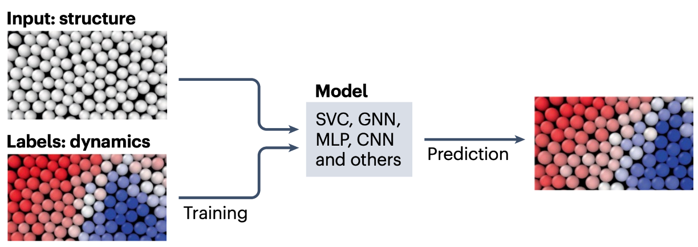

I am a computational physicist who loves to learn and find solutions to problems. I specialize in developing computationally optimized deep-learning models for practical and real-world solutions.
My expertise is in:
Graph neural network dynamics modeling
Statistical modeling
Agent-based modeling
Parallel computing
Image Processing
Fluid Dynamics
Projects
GPU-Accelerated Active Nematic Simulations
Theoretical collaboration with John Hopkins University
Active systems, such as living organisms, continuously convert chemical energy from ingested food into mechanical energy, maintaining a non-equilibrium state.
This non-equilibrium state enables self-organization into complex structures unattainable in equilibrium systems.
Nematic systems comprises of elongated entities whose assembly have a long-ranged
orientational order but no long-ranged translational order. This is another way of saying the entities have a preferred direction of alignment but lack
a regular arrangement in space.
An active nematic system, therefore, would be a colony or sheet of living rod-shaped bacteria, for example. But, what mechanisms are at work in these systems?
To answer this question, we theoretically model these systems using an open source tool:
Open-Qmin.
My work on this aspect has focused on parallelizing the computation, using CUDA, for the 2D implementation of the agent-based modeling of these
systems in Open-Qmin, and optimizing the workflow to support deep learning models. We focus on how these systems, in 2D, interact with boundaries.
Imagine an aerial view of a herd of sheep, or a sheet of rod-shaped bacteria, navigating the obstacles in a small enclosure.
The video above shows the nematic director field, velocity field, and pressure field of a modeled active nematic system in a 64x64 finite difference
grid (with no obstacles).
<
Machine Learning Structure-Dynamic Correlation in Supercooled Liquids
Independent computational study
When a system is cooled rapidly to avoid crystallization at the freezing temperature, it forms a supercooled liquid. Its particles lack regular spatial arrangements,
preserving continuous translational symmetry as in ordinary liquids, yet exhibit solid-like viscosity akin to crystalline solids.
In crystalline solids, predicting failure sites is straightforward due to their regular lattice structure, as particle rearrangements—precursors to material
failure — are concentrated around lattice defects.
The irregular particle structures in supercooled liquids make predicting sites of particle rearrangements non-trivial, necessitating supervised machine learning models to
accurately correlate local structure with dynamics.
My work in this project centered on implementing transformer-based neural networks, graph neural networks and a couple of traditional machine learning
models in a supervised learning approach to investigate the correlation between structure and dynamics, and a common physical interpretation from the models.
The workflow was optimized to process large-scale datasets through C-Python pipelines.

Machine learning models, trained on structural descriptors or graphs with labels from molecular dynamics simulations, predict structural rearrangements in unseen structures
using techniques like SVC, GNNs, MLPs, CNNs etc., with colors indicating frozen (blue) or rearranging (red) particles. Figure borrrowed
from Nature reviews physics.
<
Transfer Learning for predicting glassy dynamics from fluid structure
Computational study at Emory University
To predict particle rearrangement from structure in supercooled liquids, a study used a Support Vector Classification (SVC) approach
to identify the energy cost required for rearrangement in a local structure.
Although this machine learning methodology provides valuable physical insights, it requires balanced labeled datasets on the scale of tens of thousands, which are derived from the
deeply supercooled phase and are computationally costly to obtain.
In this project, I developed a support vector classifier using a balanced labeled dataset from the computationally accessible liquid phase, demonstrating that it predicts
energy barriers for particle rearrangements in local structures consistently with a classifier trained on a supercooled phase dataset. This resulted in a publication
in Physical Review Research.
<
Statistical Modeling of Material Failure in Disordered Systems
Computational study at Emory University
The isoconfigurational ensemble focuses on the statistical properties of a system's dynamics given a fixed structural arrangement. It aims to isolate the influence of structure on dynamics
by generating multiple dynamical trajectories from the same starting configuration.
By averaging over these trajectories, the method calculates statistical quantities (like probability of rearrangement) that describe the average dynamical behavior associated with that specific structure.
In the project, I used the isoconfigurational ensemble to identify the probability of rearrangement from local structure for disorderd systems.
This work contributed to the development of supervised machine learning, including deep learning, techniques for disordered systems.